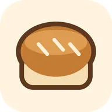
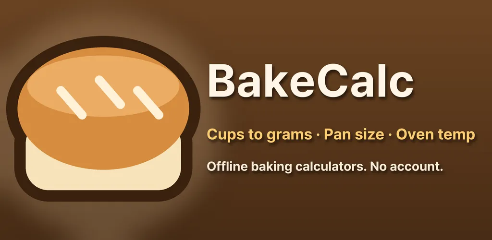
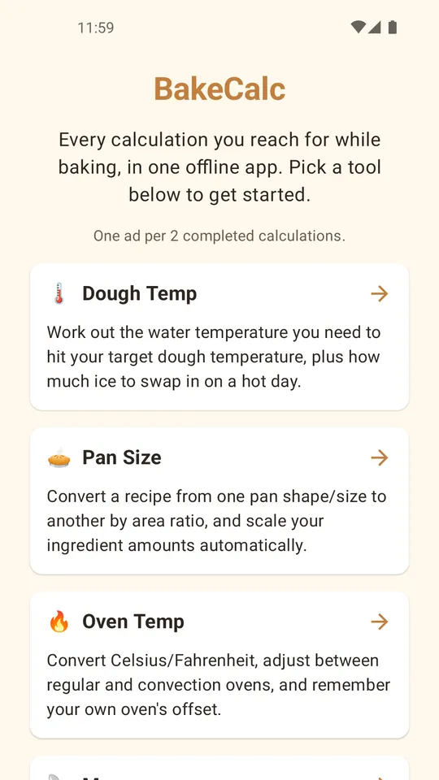
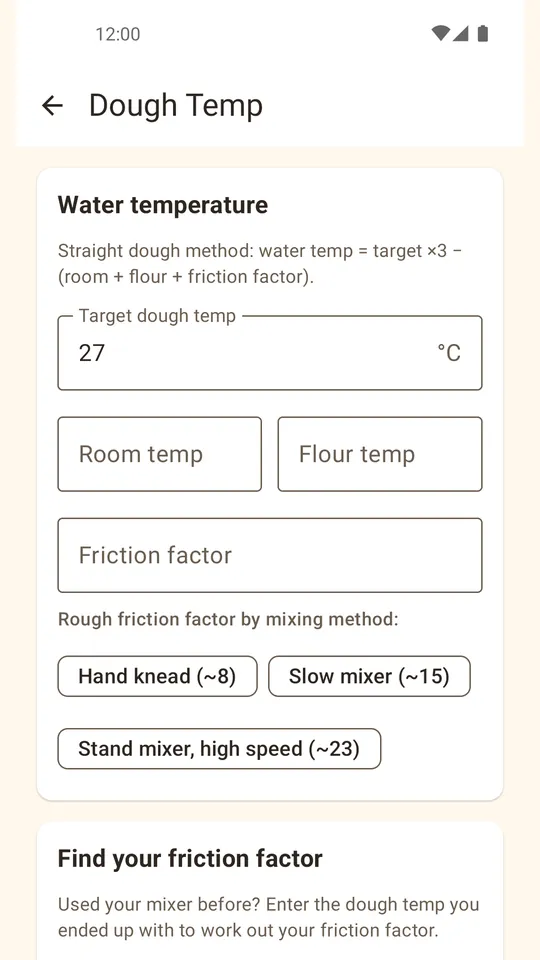
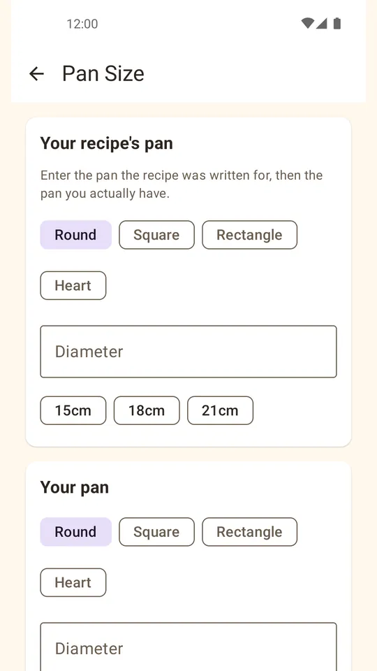
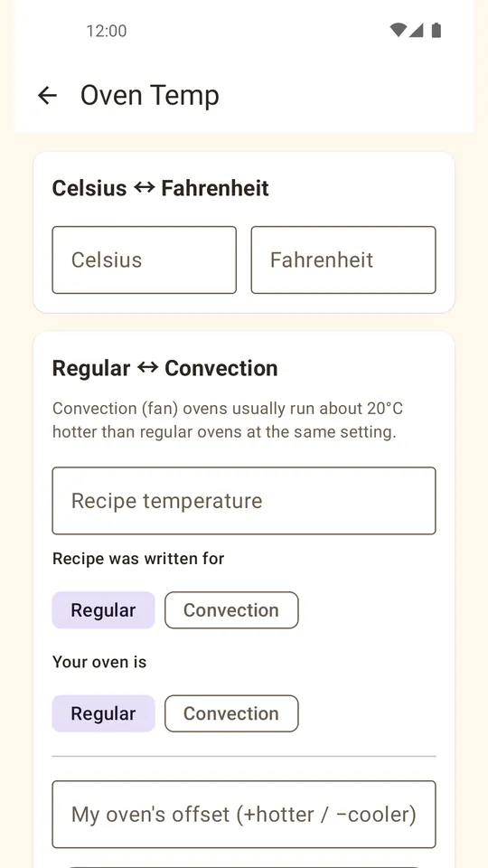
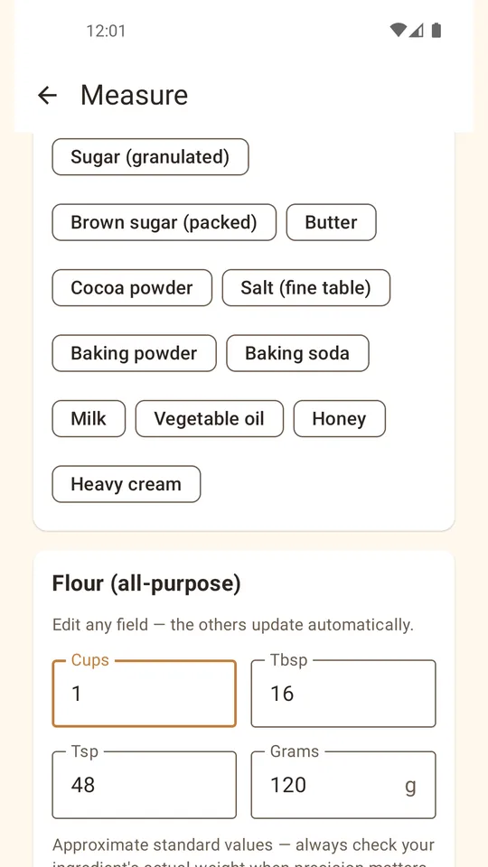

Cups to Grams Baking Converter
Convert cups and spoons to grams by ingredient. Oven temp, pan and dough temp.






About this app
Every calculation you reach for while baking, in one offline app. No account, no server.
- Dough temperature — find the water temperature you need to hit your target dough temperature. Get ice amounts for hot days, and back-calculate your mixer's friction factor from a past bake.
- Pan size conversion — convert a recipe's pan to the one you actually have by area ratio (round, square, rectangle, heart), and scale your ingredients automatically.
- Oven temperature — convert Celsius/Fahrenheit, adjust between regular and convection ovens, and save your own oven's offset for next time.
- Measurement conversion — convert cups, tablespoons, and teaspoons to grams for common ingredients like flour, sugar, and butter, using real ingredient density.
Note: warm rooms in summer make dough over-ferment fast — start with the dough temperature calculator to control your water temp.
Results are approximate guideline values — actual results vary by oven, ingredients, and technique.
Android · free with ads · Developer: RealTunaLove · Store listing in 17 languages
Background story: why I built it